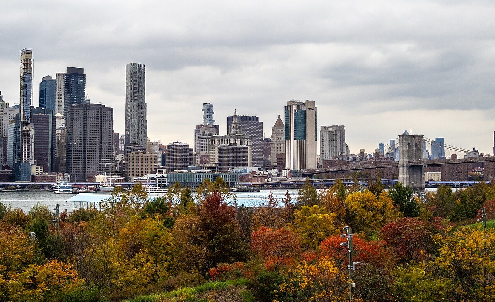
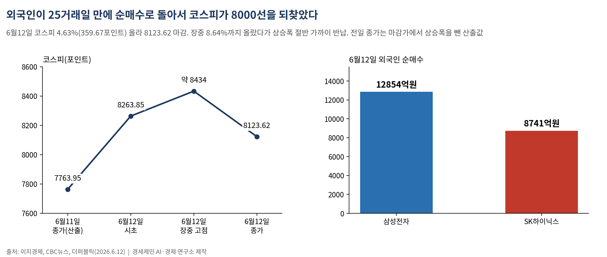
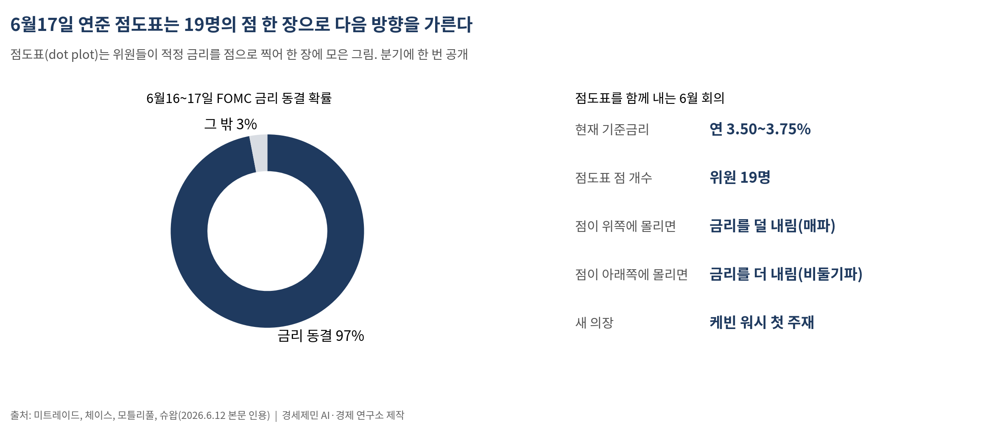
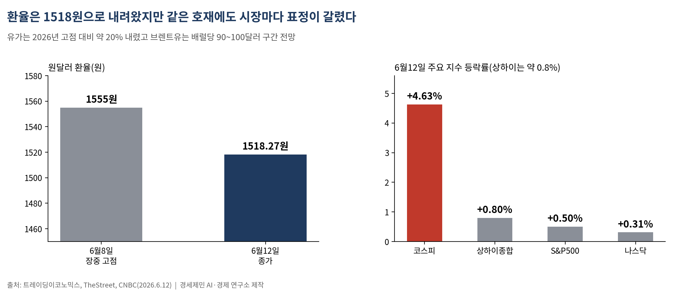
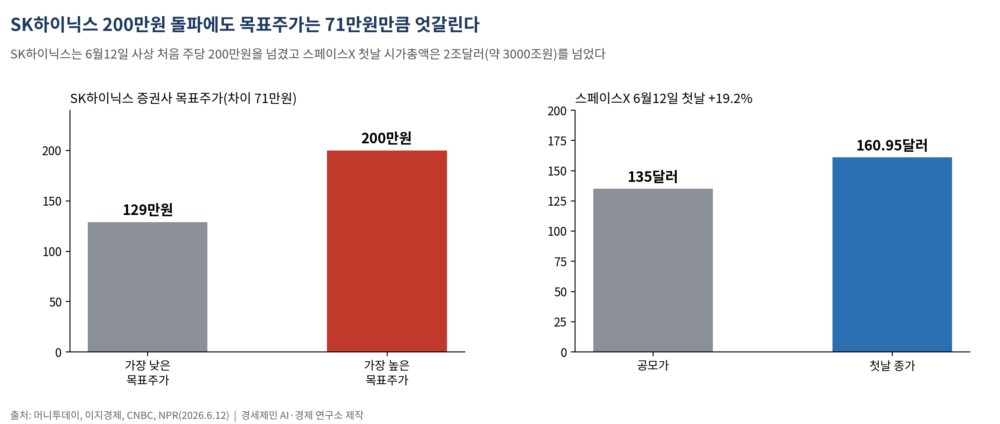
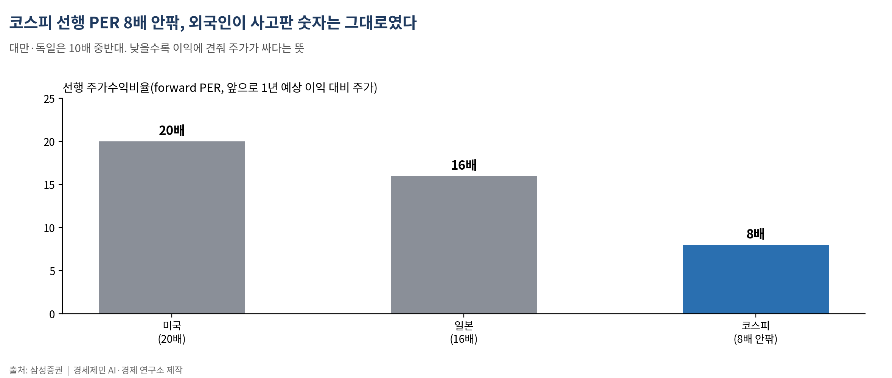

[주식공부] 코스피 8000 되찾은 힘, 이번에도 한국 밖에서 왔다
AI경세제민=김갑봉 기자 | 외국인 25거래일 만에 순매수 복귀·삼성전자 1조2854억 사들여, 스페이스X 첫날 19% 급등이 분위기 띄워… 6월17일 연준 점도표가 다음 방향 가른다

코스피가 8000선을 되찾았다. 6월12일 코스피는 4.63%(359.67포인트) 오른 8123.62에 마감해 사흘 만에 8000선 위로 올라섰다(이지경제·CBC뉴스). 지난주 사흘간 8%씩 오르내린 롤러코스터의 끝은 반등이었다.
이 반등을 만든 힘은 지난주 폭락 때와 똑같이 한국 밖에 있었다. 25거래일 동안 한국 주식을 팔던 외국인이 6월12일 사자로 돌아섰다. 삼성전자를 1조2854억원, SK하이닉스를 8741억원어치 순매수했다(더퍼블릭). SK하이닉스는 2.33% 올라 사상 처음으로 주당 200만원을 넘겼고, 삼성전자는 7.86% 뛰었다(이지경제). 외국인이 떠난 자리도, 돌아온 자리도 같은 종목이었다.
다음 주 방향을 가를 사건은 6월16~17일 미국 연방공개시장위원회(FOMC) 회의다. 폭락도 반등도 미국에서 출발했듯, 이번 주 코스피의 다음 한 발도 미국 달력에 적혀 있다.
외국인이 25거래일 만에 돌아왔다

지난주 코스피는 6월8일 8.29% 폭락, 9일 8.18% 폭등, 10일 4.52% 급락으로 사흘을 보냈다. 11일과 12일은 방향이 위로 잡혔다. 동력은 두 가지였다. 미국과 이란의 종전 기대가 커졌고, 6월12일 일론 머스크의 스페이스X가 미국 나스닥에 상장하며 위험자산을 사려는 분위기가 살아났다.
6월12일 하루를 뜯어보면 시장의 망설임이 그대로 드러난다. 코스피는 전장보다 6.44% 오른 8263.85로 출발해 장중 한때 8.64%까지 치솟아 8434선을 찍었지만, 오후 들어 차익실현 매물이 쏟아지며 상승폭을 절반 가까이 반납했다(이지경제). 차익실현은 오른 주식을 팔아 이익을 미리 챙기는 매매다. 8000을 되찾은 것과 8400을 지킨 것은 다른 문제였다.
핵심은 수급의 방향이 바뀐 점이다. 외국인은 25거래일 만에 순매수로 돌아섰다. 외국인이 한국 주식을 사고판 흐름은 지난주 폭락의 한 원인이었고, 이번 주 반등의 한 원인이기도 했다. 같은 손이 방향만 바꿨다.
6월17일, 연준이 점 19개를 찍는 날

다음 주 가장 큰 사건은 6월16~17일 FOMC다. 시장은 금리 동결을 97% 확률로 본다. 미국 기준금리는 현재 연 3.50~3.75%다(미트레이드·체이스). 그런데 이번 회의가 특별한 이유는 금리 숫자가 아니라 함께 공개되는 그림 한 장에 있다.
6월 회의는 경제전망요약(SEP, Summary of Economic Projections)을 내는 회의다. 이때 연준은 점도표(dot plot)를 함께 공개한다. 점도표는 FOMC 위원 개개인이 앞으로 적정하다고 보는 금리 수준을 점 하나로 찍어 한 장에 모은 그림이다. 위원 19명의 점이 위쪽에 몰리면 금리를 덜 내리겠다(매파)는 뜻이고, 아래쪽에 몰리면 더 내리겠다(비둘기파)는 뜻이다. 분기에 한 번만 나오므로, 이 그림이 바뀌는 날 시장은 크게 움직인다.
이번 회의는 5월에 취임한 새 의장 케빈 워시가 처음 주재한다. 시장은 연준이 그동안 성명서에 담아 온 '완화 편향', 곧 앞으로 금리를 내릴 쪽으로 기울어 있다는 표현을 빼고 '중립'으로 옮겨갈 것으로 본다(모틀리풀·슈왑). 편향이 중립으로 바뀌고 점도표의 점들이 위로 올라가면, '올해 추가 인하는 기대하지 말라'는 신호다. 금리를 내려 주길 바라던 시장에는 부담이고, 미국 금리를 따라 도는 한국 증시에도 곧장 전해진다.
유가·환율·이란, 한 줄로 이어진 숫자들

미국 금리가 한국을 흔드는 통로는 환율이다. 6월12일 원달러 환율은 1518.27원이었다(트레이딩이코노믹스). 지난주 1555원까지 올랐던 데서는 내려왔지만, 이란 봉합 기대에도 원화가 크게 강해지지는 않았다. 외국인이 주식은 사면서도 달러 수요는 여전했다는 뜻이다. 환율이 높게 머물면 외국인은 한국 주식을 팔아 달러로 바꿔 나갈 유인이 커진다.
환율을 누르는 열쇠는 유가와 중동이다. 트럼프 미국 대통령은 이란과 초기 합의문에 이르면 6월14일 유럽에서 서명한다고 밝혔고, 서명 직후 호르무즈 해협을 전면 재개방한다는 조건이 담겼다(RBC우크라이나·PBS). 6월12일 파키스탄 총리는 미국과 이란이 평화안 최종 문안에 합의했다고 발표했다. 다만 이란은 정확한 서명 날짜에 신중한 태도를 보여, 봉합이 끝났다고 보기엔 이르다. 통로가 열린 것과 이미 돌아온 것은 다르다.
유가는 2026년 고점 대비 약 20% 내렸다. 브렌트유는 배럴당 90~100달러(약 14만~15만원) 구간에 머물 것으로 전망된다(CNBC). 유가가 내리면 수입물가가 내리고, 물가가 잡히면 금리를 내릴 여지가 생긴다. 유가와 물가와 금리와 환율은 따로 노는 숫자가 아니라 한 줄로 이어진 숫자다.
미국 밖도 같은 바람을 탔다. 6월12일 S&P500은 0.50% 오른 7431.46, 나스닥은 0.31% 오른 25888.84에 마감했다(TheStreet). 중국 상하이종합지수는 약 0.8% 오른 4032선에 마감해 한 달 만에 첫 주간 상승으로 한 주를 닫았지만, 선전성분지수는 주간 2.3% 빠져 3주 연속 내렸다(트레이딩이코노믹스). 같은 호재에도 시장마다 표정이 갈렸다.
200만닉스와 3000조원짜리 상장

이번 주 가장 뜨거운 종목은 SK하이닉스였다. 6월12일 사상 처음 주당 200만원을 넘기며 '200만닉스'라는 말을 시장에 남겼다(이지경제). 열기의 뿌리는 인공지능 메모리에 있다. SK하이닉스는 인공지능 반도체에 들어가는 고대역폭메모리(HBM, High Bandwidth Memory·여러 메모리 칩을 수직으로 쌓아 데이터를 빠르게 주고받게 만든 반도체)에서 앞서 있고, 2026년 물량은 이미 완판된 상태다. 증권사 목표주가는 129만원에서 200만원까지 벌어져 있다(머니투데이). 다만 초보가 챙길 대목은 목표주가가 200만원이라는 사실이 아니라, 목표주가가 129만원과 200만원으로 갈린다는 사실이다. 같은 회사를 두고 전문가의 눈도 71만원만큼 엇갈린다.
또 하나의 화제는 한국이 아니라 미국에 있었다. 스페이스X가 6월12일 나스닥에 상장(티커 SPCX)하며 첫날 19.2% 올라 주당 160.95달러(약 24만원)에 마감했다(CNBC·NPR). 공모가 135달러(약 20만원)로 시작해 장중 30% 넘게 뛰었다가 일부를 반납했다. 555억주가 넘는 주식을 팔아 약 750억달러(약 114조원)를 모은, 역대 최대 규모 기업공개다. 첫날 시가총액이 2조달러(약 3000조원)를 넘어섰다. 이 한 건이 전 세계 위험자산 투자 심리를 끌어올렸고, 중국에서도 항공우주 관련 주가가 함께 뛰었다.
상장의 과실이 어디로 가는지도 함께 본다. 750억달러가 모인 뒤에도 머스크는 의결권 대부분을 쥔다. 천문학적 자금이 흘러든 회사의 통제권은 한 사람에게 남는 구조다.
초보가 챙길 두 단어 — 점도표와 보호예수

이번 주에 외울 단어 둘. 하나는 점도표다. 위에서 풀었듯 연준 위원들이 적정 금리를 점으로 찍은 그림이고, 6월17일 그 점들이 위로 갔는지 아래로 갔는지가 다음 방향을 가른다.
다른 하나는 보호예수(lock-up)다. 기업이 상장할 때 대주주와 내부자가 일정 기간 주식을 팔지 않겠다고 묶어 두는 약속이다. 상장 첫날 주가가 뛰는 한 이유는 시장에 풀린 물량이 적기 때문이고, 보호예수가 풀리는 날 갑자기 매물이 쏟아져 주가가 흔들리기도 한다. 스페이스X 첫날 19% 급등에 들뜨기 전에, 묶인 물량이 언제 풀리는지를 함께 봐야 하는 이유다. 첫날 오른 것과 계속 오르는 것은 다른 문제다.
마지막으로 외국인이 왜 돌아왔는지에 숫자를 붙여 둔다. 코스피 선행 주가수익비율(forward PER·앞으로 1년 예상 이익 대비 주가가 몇 배인지 보는 잣대)은 8배 안팎으로, 미국 20배, 일본 16배, 대만·독일 10배 중반대에 견줘 절반 수준이다(삼성증권). 낮을수록 이익에 견줘 주가가 싸다는 뜻이다. 한국 증시가 싸다는 사실은 외국인이 팔 때나 살 때나 그대로였다. 달라진 것은 그들이 그 숫자를 언제 집어 들었느냐다.
6월12일 외국인이 25거래일 만에 사자로 돌아선 날, 개인은 그 흐름을 '코스피 8000 회복'이라는 헤드라인으로 만났다. 6월17일 점도표를 미리 펴 보는 일과, 다음 주 시세판을 헤드라인으로 마주하는 일은 다른 자리에서 시작한다.
─────────────────────
활용 AI: Claude Opus 4.8 (Anthropic)
참고문헌
이지경제, '코스피 결국 8000 뚫었다…SK하이닉스는 사상 첫 200만 닉스', 2026.6.12, https://www.ezyeconomy.com/news/articleView.html?idxno=235735
CBC뉴스, '삼성전자·SK하이닉스 급등 주도…코스피 8.05% 폭등, 단숨에 8000선 회복', 2026.6.12, https://www.cbci.co.kr/news/articleView.html?idxno=581586
더퍼블릭, '미·이란 종전 기대감, 그리고 외국인의 복귀…코스피 8000선 탈환', 2026.6.12, https://www.thepublic.kr/news/articleView.html?idxno=307585
머니투데이, '이대로 200만닉스 찍는다?…엔비디아 넘은 이익률, 눈높이 쑥쑥', 2026.4.23, https://www.mt.co.kr/stock/2026/04/23/2026042315275560332
CNBC, 'SpaceX IPO takeaways: SPCX closes at $161, jumping 19% after record debut', 2026.6.12, https://www.cnbc.com/2026/06/12/spacex-ipo-spcx-live-updates.html
NPR, 'SpaceX IPO makes history as largest ever. Stock gains 19% on first day', 2026.6.12, https://www.npr.org/2026/06/12/nx-s1-5855004/stock-ai-spacex-ipo-elon-musk
TheStreet, 'Stock Market Today (June 12, 2026)', 2026.6.12, https://www.thestreet.com/stock-market-today/stock-market-today-dow-jones-sp-500-nasdaq-updates-june-12-2026
Mitrade, 'Fed Interest Rate Decision 2026: Powell Is Out, Warsh Is In', 2026.6, https://www.mitrade.com/au/insights/others/cfd-trading/fed-interest-rate-decision-2026
The Motley Fool, 'Prediction: Fed Chair Kevin Warsh and the FOMC Will... Make a Necessary Policy Adjustment Next Week', 2026.6.9, https://www.fool.com/investing/2026/06/09/fed-kevin-warsh-fomc-trump-ire-policy-adjustment/
Chase, 'What To Expect at Kevin Warsh's First Federal Reserve Meeting', 2026.6, https://www.chase.com/personal/investments/learning-and-insights/article/kevin-warsh-first-federal-reserve-meeting-as-chair-june-2026
RBC-Ukraine, 'Trump announces signing of new nuclear deal with Iran on June 14', 2026.6, https://newsukraine.rbc.ua/news/us-iran-talks-near-finish-line-as-trump-hints-1781375572.html
CNBC, 'Oil drops 20% from 2026 peak on optimism over U.S.-Iran ceasefire talks', 2026.5.29, https://www.cnbc.com/2026/05/29/oil-prices-iran-ceasefire-us-trump-strait-hormuz-energy-costs.html
Trading Economics, 'South Korean Won / China Shanghai Composite', 2026.6.12, https://tradingeconomics.com/south-korea/currency
주식공부 #코스피 #외국인순매수 #FOMC #점도표 #케빈워시 #SK하이닉스 #200만닉스 #스페이스X상장 #보호예수
사진 출처
· [대표사진] Julian Lupyan, "Financial District East Skyline, 2025.jpg", 위키미디어 공용, CC0, https://commons.wikimedia.org/wiki/File:Financial_District_East_Skyline,_2025.jpg
※ 이 기사는 인공지능을 활용해 작성했습니다.
관련기사
- [주식공부] 코스피가 사흘 만에 8%씩 오르내린 까닭, 답은 다음 주 미국에 있다
- [주식공부] 코스피 9000 첫 돌파한 날, 코스닥은 3% 무너졌다
- [주식공부] 25년 7개월 지킨 왕좌, 하루 만에 주인이 바뀌었다 — 하이닉스가 삼성을 제친 날
- 코스피, 사상 최고가 주에 서킷브레이커 급락…다음 주 삼성 실적이 분기점
저작권자 © AI경세제민 무단전재 및 재배포, AI학습 및 활용 금지